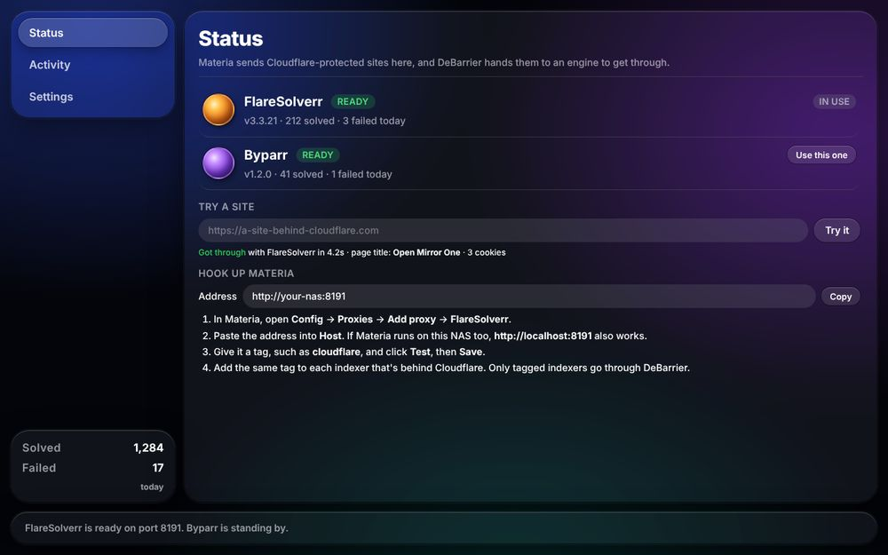
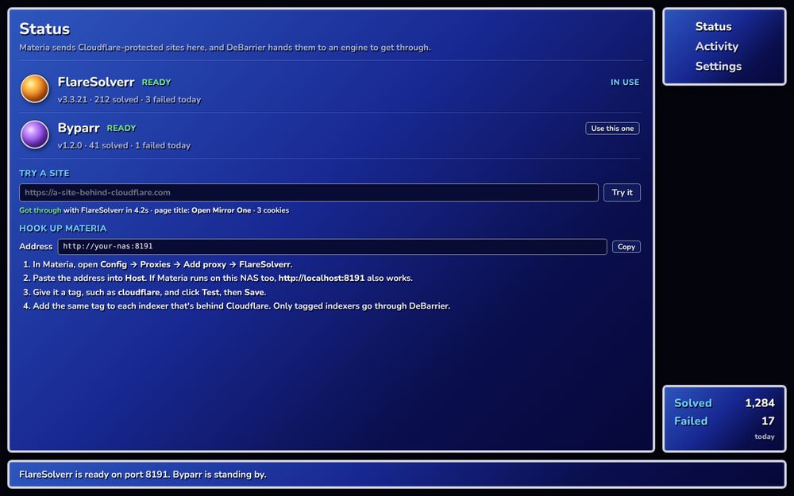
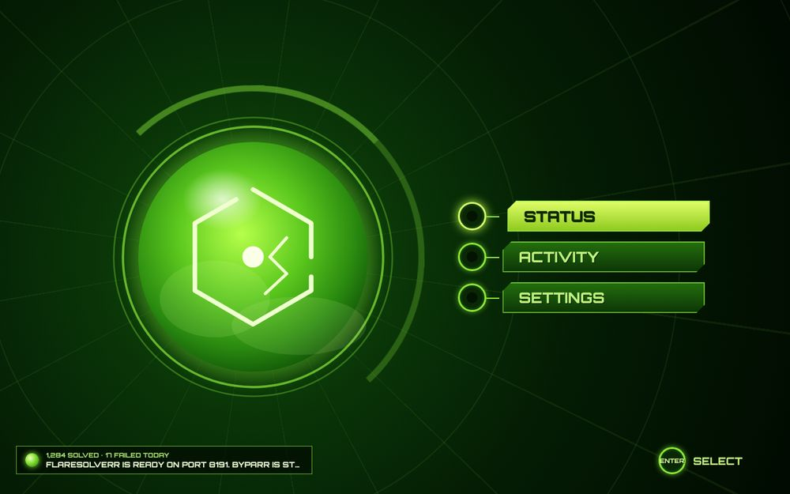
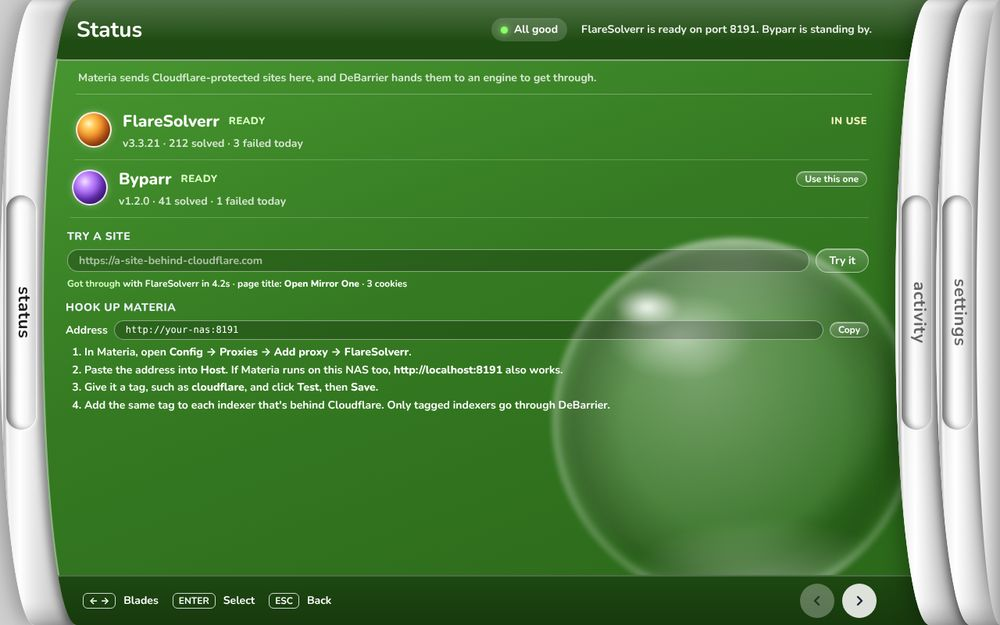
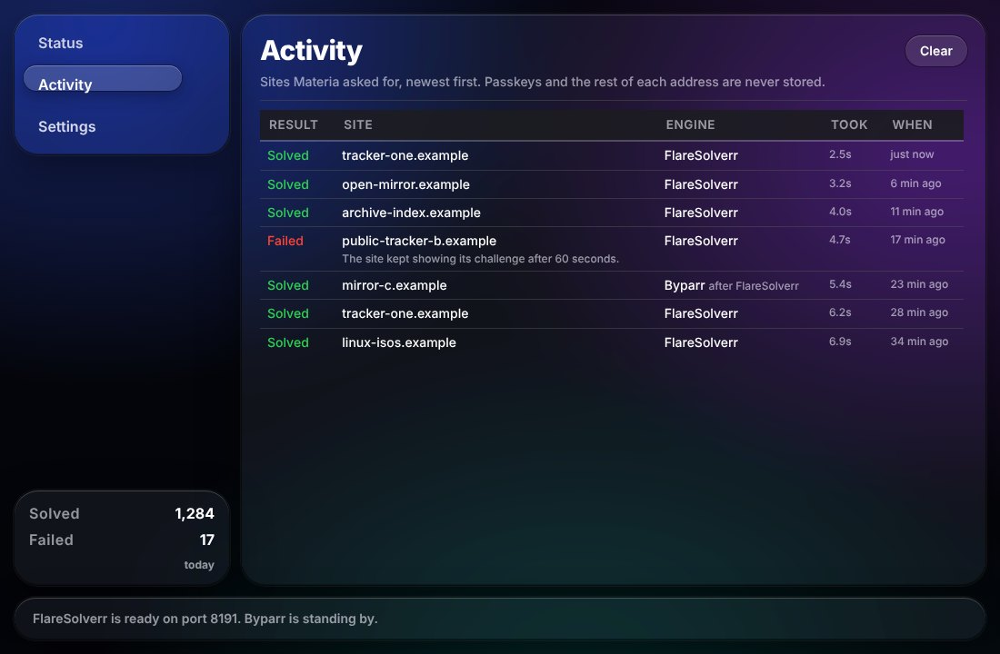
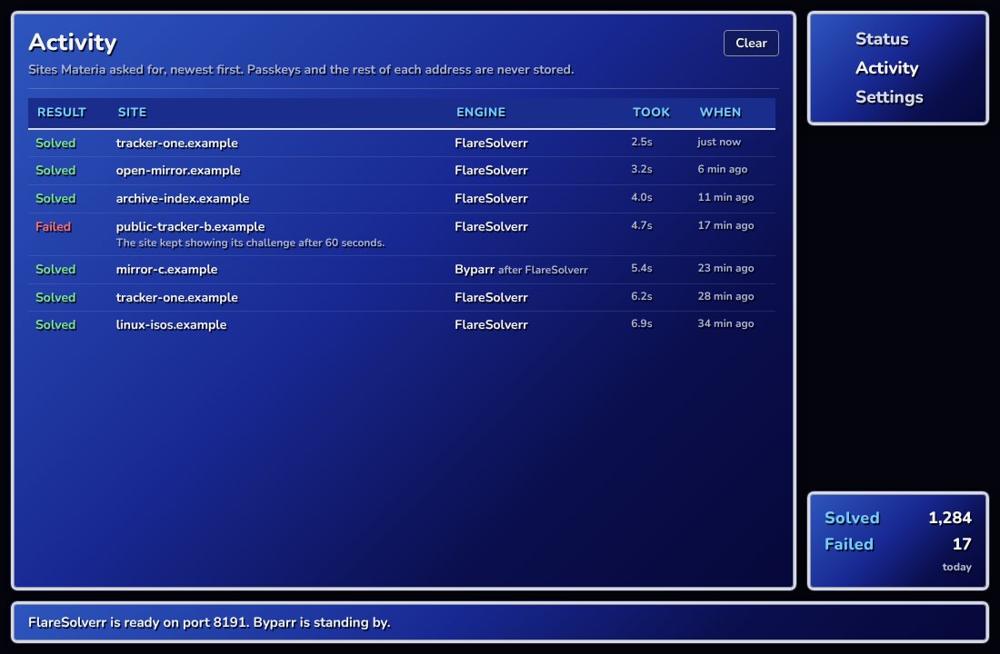

DeBarrier
Gets past the gatekeepers.
DeBarrier gets Materia's searches through Cloudflare checks, running quietly on your Synology.
Synology
DeBarrier–▢✕




Two engines. One answer.
If one engine can't get through a site, DeBarrier tries the other, and remembers which one works next time.
Try
The first engine takes the request.
Fall back
Blocked? The second engine steps in.
Remember
The winner is saved per site.
Activity
See every solve.
Status, Activity and Settings pages show what was asked for, which engine solved it and how long it took. Passkeys and the rest of each address are never stored.
DeBarrier · Activity–▢✕


- Runs on
- Synology NAS
- Engines
- Two, with automatic per-site fallback
- Works with
- Materia
- Updates
- Update now, plus automatic updates that roll back if something fails
- Privacy
- Passkeys are never stored
- Looks
- FFVII menu, Box of X, Blades and Liquid Glass
Part of the Lifestream suite
Better together.
Six apps that share one look and pass work to each other behind the scenes.